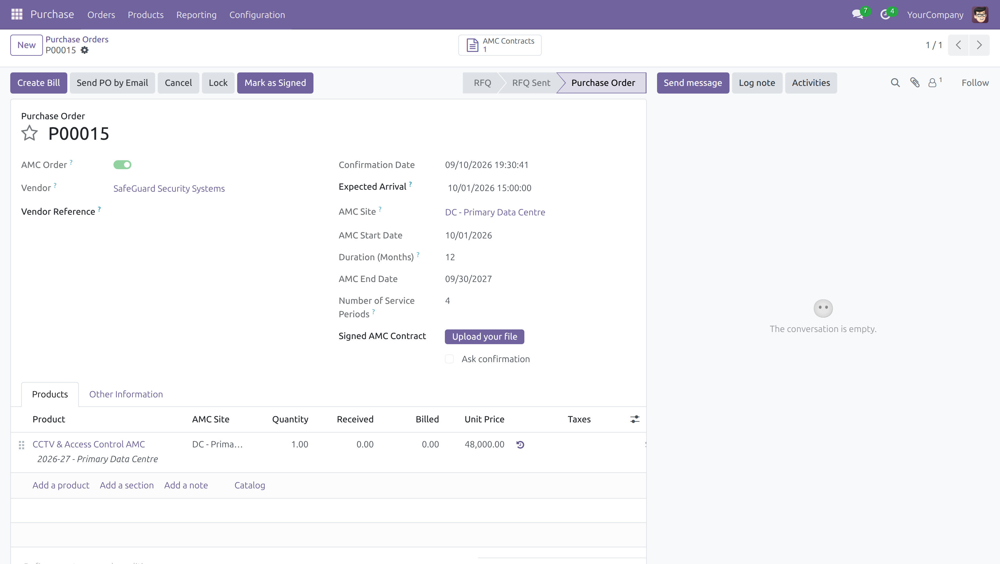

The whole flow, five steps
Nothing to learn beyond the purchase order you already use.
Tick “AMC Order” on the request for quotation
The AMC block appears on the order header: site, start date, duration and how many service periods the contract is cut into. From that moment the order accepts service products only — enforced by the product domain in the view and by a Python constraint, so nothing storable slips onto a maintenance contract.

Confirm — one contract per line, cut into service periods
Each order line becomes a Mother AMC, split into the number of service periods you asked for: four for quarterly servicing, twelve for monthly. A contract spanning whole months is cut on the calendar (15 Jan → 14 Feb); anything else is split evenly by days, with the remainder handed to the earliest periods so the parts always add back up to the whole.

Press “Mark as Signed” — the provisions write themselves
One button on the purchase order signs every contract it carries and generates the monthly provision entries in draft, one entry per order per month, with one debit and one credit line per site and the site's analytic account already stamped on them. Signed the contract three months late? The months already gone are folded into a single catch-up entry, so the accrual is never short.

Close each period: Done, Partially Serviced or Expired
A service report is mandatory to mark a period done, and a reason is mandatory to expire one. Partially Serviced asks how many days were actually covered and books a draft reversal entry for the rest; Expired reverses the whole period. Existing provision entries are never edited — the correction is always a separate, reviewable entry.

Bill the vendor, milestone by milestone
The order's payment term decides how many bills the contract splits into and how much each one carries. Milestone Q2 cannot be raised before Q1 has left draft, and the same milestone cannot be billed twice. The bill line is posted against the provision account, drawing down what was accrued, and the selected periods' service reports plus the signed contract are copied onto it as attachments.